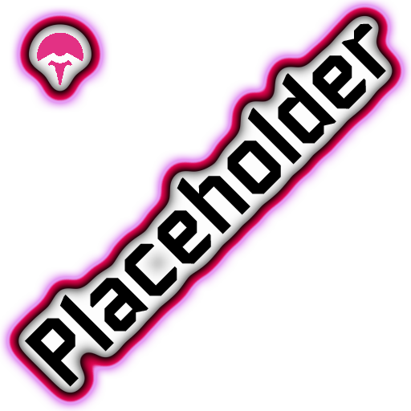

<!> Todo on-hover descriptions of visuals for placeholder graphics. Refer to prior item lists for visual information, or inquire for items not listed before (new additions, etc)
<!> Todo revise older items to prevent dilution making some builds and items less valuable (e.g. Ignition Tank via adding burn to more items)
<!> Items are not finalized and may go through further revisions.
| Item | Description | Notes |
|---|---|---|
|
Common Ochre Bracer |
Your temporary barrier doesn't decay below 5% (+5% per stack) of your maximum health. You slowly gain a temporary barrier while outside of combat. |
Terroguelike's idea, but it's smart so I'm using it. Barrier should be more accessible and this compliments brooch, as it doesn't regen in-combat but is useful due to anti-decay. Regenerates at a rate of 1% of threshold per second. |
|
Common Safety Scissors |
Increase armor by 6 (+6 per stack) and damage by 6% (+6% per stack). |
Silly play on words, but I did want to make armor more accessible in general. The damage is a nice bonus and has a sort of mocha-effect of being a sort of hybrid-item. |
|
Common Tide Turner |
Increase damage by 5% (+5% per stack) per enemy within 25m, up to 20% (+20% per stack). |
Another damage up, this time being based on how many enemies you have around you. It caps out at 4 enemies (25% of the limit each) so you don't need to be swarmed with enemies, but it isn't a free constant 20% like watches as you need to have living enemies for it to be at full effectiveness. As the name says, it helps you turn the tides. Unsure about the 25m, too big/small? I'm not good with sizes. |
|
Common Nanocrayons |
Increase maximum health by 5% (+5% per stack). Upgrades into two random uncommon items at 4 stacks. |
Yes, this is a Caves of Qud reference. Does very little by itself, but if you collect enough then it gets rid of the stack and grants you 2 random greens. If you can find enough you get rewarded well, a nanocrayon printer serves as a more efficient yet randomized white -> green soup, at a 2:1 efficiency though at a higher investment needed. |
|
Common Hit List |
Target a random enemy every 8 (-40% per stack) seconds for 8 seconds. Targetted enemies count as elite enemies, always take Critical strikes, and explode on death for 10% of their maximum health. |
This makes non-elite enemies count as elites for the sake of items that only work on elites (guillotine, brainstalks, etc.) On-kill they explode in a shower of dollar bills, some flavourful "reward" on kill and a reward for target priority. |
|
Common Dragonade |
Gain 30% (+10% per stack) of lost health as a temporary barrier over 3 (-10% per stack) seconds. |
Do some fuckery to make this added barrier not start decaying until it is fully added? Due to the small amount you gain relatively, may be worth making it just give the whole amount at once after the delay. Exponential duration scaling, 3*0.9^(x-1) i.e. 1:3 -> 2:2.7 -> 3:2.43 -> 4:2.20 -> 5:1.97 -28-> ~33:0.1 Hyperbolic amount scaling, 0.1x/(0.1x+0.9) i.e 1:0.1 -> 2:0.18 -> 3:0.25 -> 4:0.3 -> 5:0.35 -4-> 9:0.5 -91-> 100:0.917 |
|
Common Spring Shoes |
Consecutive jumps are higher. While midair, gain 8% (+8% per stack) movement speed. |
Balances out the item pools with more speed. Game is unfun without it. You can reach higher areas by hopping more, and grants more over all mobility while you're hopping. 'Speed is war' -mithrix, moments before inventing stoneflux. |
|
Common Wound-up Wheelies |
At the start of each stage or upon picking this item up, increase movement speed by 25% (+15% per stack). This bonus gradually decreases over 3 minutes to 5% (+5% per stack). |
Speed :D Makes scouting out a map faster, while providing a diminishing speed bonus that doesn't make the item useless after time has passed. |
|
Common Hoverball Cleats |
Increases movement speed by 21% (+14% per stack) while out of danger. |
Intentionally grants a large amount of speed on the first pickup. If you can play around this, it's baller as hell though! Sort of 'win-harder'-lite in that if you have the speed it's easier to evade enemies, but being hit drops the speed bonus for a moment putting you in danger. |
|
Common Contraband Op-Amp |
Gain a shield equal to 5% of your maximum health. Gain up to 15% (+15% per stack) critical chance that depletes with your shield. |
Serves as an alternate crit chance white, though in this case granting more at a price -- if your shields are damaged, you lose the gained crit chance. This rewards effective dodging even if you can heal/regen shields, and ties it in nicely to other shield items. The shield depletion mechanic only affects this item's crit: Say you have 11% crit chance without the item, and pick one up for 26% crit chance, losing 2/3 of your shield would reduce you to 16% crit chance, losing all shield would bring you back down to 11%. |
|
Common Box of Nails |
Using the utility skill empowers your next skill with nails, applying 3 (+3 per stack) stacks of bleed for 240% base damage. Recharges every 5 seconds. |
Use utility skill -> apply bleed on hit. Balances out the diluted item pool's lack of white DoT/bleed stacks, while providing a different but interesting mechanism to access it which works better for some survivors than others. Cooldown means that spammable utilities won't break it, but skills with shorter cooldowns are obviously way better here. E.G. Slide vs Diablo Strike Due to stacking in amount applied on one hit, it works with tritips nicely in that it can apply a ton and random procs can sustain it. April fools Box of Needleticks? |
|
Uncommon Ferroglue |
30% chance to magnetize an enemy for 8 seconds, attracting projectiles within 4m (+2m per stack). magnetized enemies drop 15% more gold. |
Makes things like arti shots, shurikens, slicing maelstrom, slicing winds etc. easier to land especially at range. Synergy with Kinetic Gelatin. Gosh this actually sounds wacky with maelstrom. |
|
Uncommon Gamboge Scarf |
While outside combat gain Courage, increasing attack speed by 7%. You can have up to 10 (+4 per stack) stacks of Courage which all accumulate over 10 seconds while out of combat. A stack of Courage is lost on attacking. |
Charge up attack speed out of combat, then burn through your stored atk speed slowing down to normal speed with each attack. Fun interaction when not attacking, as your attack speed remains high for things like microbots. |
|
Uncommon Torn Reciept |
Spending money gives survey incentives until the next stage, granting 8% (+4% per stack) attack speed, 5% (+5% per stack) movement speed, and 8 (+4 per stack) armor. You can have up to 4 (+2 per stack) survey incentives at once. |
Eh on this one, I would need to fine tune numbers a bit better to account for the actual amount of costly interactables per stage. But it does encourage full looting, and has a fun little dynamic to getting gradually stronger over the progress of the stage then losing it as you enter a new stage, as opposed to most items that are just always active. |
|
Uncommon Anticoagulant Formula |
Debuff effects last 25% (+25% per stack) longer, and afflicted enemies attack 25% slower. |
Incredible when paired with easily spread DoTs like gasoline, mildly CCing enemies by reducing their attack rate. Doesn't do much to help you kill quicker but it synergizes well with bleed effects and over all is a damage increase for DoTs. |
|
Uncommon F.O.R.T. Security Subscription |
Deploy 2 (+1 per stack) pulse turrets during the Teleporter event to fight for you. Pulse turrets prioritize non-boss enemies. |
Ofc works with other holdouts like void fields, but it's a more offensive take on Lepton Daisy that helps clear fodder. Periodically fires a hitscan ray that bounces like droneman gun to 1 additional enemy. These turrets likely should be quite durable to draw aggro, maybe have them shut down and 'turtle up' when they run out of health, before entering a regenerative phase and then popping back out? |
|
Uncommon Kinetic Battery |
Charge up an explosion every 10 seconds in combat, gaining 50% (+25% per stack) damage and 6m (+4m per stack) radius per enemy killed while charging. |
Charge up per kill, then periodically go kaboom. Think of it like an accumulated gasoline that instead of igniting, can get nasty big and strong. Not entirely happy with how I worded this. Basically helps chunk and cull hordes of foes, the more enemies you kill between explosions the stronger it is. Slow cooldown means you have plenty of time to charge it up and can't rely on it. |
|
Uncommon Malon's Bandage |
Buffs have their duration increased by 1 second when you heal. Recharges every 2 (-25% per stack) seconds. |
Buffs are nice. Healing is something good. Enjoy healing more :D Actually scales as 1+1/x so it never reaches 1 second cooldown, meaning buffs won't go infinite. Healing =/= regen like Naturopath. May add a min healing threshold to trigger it? |
|
Uncommon Pest Repellant |
Your attacks gain 2% (+2% per stack) critical chance per debuff an enemy has. Critical strikes increase the duration of debuffs by 0.2 (+0.2 per stack) seconds. |
Sort of in the same vein as death mark, though instead of a 1.5x damage multiplier at a flat amount, a bit of crit per debuff. This is because it is reliant on debuffs, and because it makes crit more accessible over all if you're built towards debuffs. Of course, scales duration gain with proc co. Can be thought of similarly to anticoagulant in how it interacts with DoTs, though has a fun interaction with shatterspleen in that you get to stack up both bleed duration and stacks. |
|
Legendary Kinetic Gelatin |
Projectiles bounce 2 (+1 per stack) times on terrain, aiming towards enemies and gaining +30% (+15% per stack) damage after each bounce. |
Boing Boing Boing :D you can shoot more blindly and still hit stuff maybe, misses might hit stuff, and it's just a really funny idea imo. Piercing projectile synergy! |
|
Legendary Parasitic Cartridge |
On killing an enemy, trigger effects that require you to take damage 1 (+1 per stack) times. |
On damaged items tend to suck if you're good at the game, this flips that. Also has newbie appeal by reducing skill on being hurt? |
|
Legendary Carnage Cestus |
Hits that deal more than 400% damage consume up to 40% (-20% per stack) of your temporary barrier to increase their damage. |
Get barrier -> Wreck shit. Felt like there needed to be ways to "consume" barrier to free it up for more and I like "big chunky hit" items like bands. Possibly a controversial idea due to it consuming barrier, but I feel this item really is made for that concept most, and would need some heavy redesign to change it up. |
|
Legendary Overclocked Stopwatch |
Every 5 (-1 per stack, minimum 2) attacks, guarantee a Critical strike. Critical strikes deal additional damage to slowed enemies, up to 100% (+50% per stack) at 0m/s. |
Combines alternate crit access (via the 'every X attacks' mechanic) and alternate crit damage (via scaling off speed reduction). Serves to half fill in the same niche that Laser Scope does for damage where item quantity chokes it out, and adds a red item way to use Critical strikes. |
|
Legendary Prayer in a Prism |
Using a shrine increases ALL stats by 2% (+2% per stack). Shrines of Chance roll +1 time to give an item per failed purchase. |
Felt like an item that rewards you further for using shrines would be cool, and there aren't too many reds that directly boost your stats. Comes with a secondary bonus of making you less likely to fail at chance shrines, though this also serves as a balancing tool to prevent people from gaining massive stats by constantly failing shrines. In practice, just give the player stacks + 1 hidden items that boost stats by 1% when you do a shrine probably? I may be missing an obvious interaction with some spammable shrine? |
|
Legendary Errant Biomass Processor |
5% (+5% per stack) chance on kill to gain scrap, up to 4 (+2 per stack) times per stage. |
Grants random scrap on kills sometimes, limited per stage. RETURN OF THE BLOODIED BRIEFCASE :) fuck you sonorous whispers fuck you sonorous whispers fuck you sonorous whispers |
|
Boss Regal Carapace |
15% (+15% per stack) chance on being hit to charm the attacker into fighting for you for 8 seconds. Increase armor by 30. |
A more unique on-hurt item, in this case possibly turning your attacker to your side for a moment. The non-scaling armor makes it less punishing to be hit. |
|
Boss Fractured Clay Amphora |
Upon killing an elite monster, you and your allies gain clay shards that grant 50 armor against the next 2 (+1 per stack) hits. |
On elite kill, refresh stacks of a buff which grants 50 armor, lost on taking damage. Makes your allies like drones and such harder to kill, and of course yourself too. |
|
Boss Spiteful Shell |
Killing enemies has a 5% (+5% per stack) chance to spawn an allied Mini Wisp. |
Gain a bunch of weak allies as you kill enemies. Also an excuse to have cute marketable mini-wisps :D |
|
Boss Avaricious Eyes |
Unlock chests within 7m after standing still (5s/15s/30s) (-20% per stack). Stops working after the Teleporter event. You can see the contents of unopened chests. |
Self explantory. Stand still by chests to slowly open them. Gold still holds value since you gain it simply by playing the game, and you put yourself in danger by standing still for a long time. Previewing chests allows you to prioritize chests with items you want. Also sort of implies that scavs can open chests without gold, which makes sense. Also thought scavs really could do with something unique that could drop from their bags. |
|
Void Common Prokaryotic Crystal |
Increase damage to enemies up to 20% (+20% per stack) the further they are from you. Corrupts all Focus Crystals. |
Classic "same niche but inverted", this time you want to position yourself further away. TODO rework, possibly make buffwards around the map which boost your damage while you're inside them? Not super satisfied with this. |
|
Void Common Abyssal Draught |
Gain a shield equal to 5% of your maximum health. When this shield is depleted, gain a temporary barrier equal to 15% (+5% per stack) of your maximum health. Corrupts all Dragonades. |
Acts as a buffer after you lose your shield, some nice survivability until you can escape/wait out the shield regen for plasma shrimp/op-amp. Could have the barrier absorb overflow damage maybe? Interesting interaction of simply being tied to shieldbreak, so even if it just regens to 1 point and immediately breaks, you still get the full barrier. |
|
Void Common Crescive Ink |
Increase armor by 4 (+4 per stack). Items have a 12% (+12% per stack) chance to duplicate when Corrupted. Corrupts all Nanocrayons. |
Chance to duplicate items scales hyperbolically. This trades in the 'rise and fall' of nanocrayons, gaining hp then losing it to gain more diverse items of a higher rarity, for armor that doesn't go away as you stack it, and gradually more void items while staying in the theme of vradle -- this void item is an avenue to more void items. Has corruption built in so it can technically proc itself for a fun 'self scaling'. |
|
Void Uncommon Peplomer Bulwark |
After standing still for 0.25 seconds, increase armor by 40 (+40 per stack), and damage by 50% (+50% per stack) of your armor. Corrupts all Rose Bucklers. |
Similar inverse of bungus/wungus, but without the cringe 1s delay from bung, and with more incentive to stand still. Stacking is hyperbolic: 33% -> 50% -> 60% -> 66% -> -5-> 83% etc ENGI MAINS RISE UP, THERE ARE DOZENS OF US (you railgunner enjoyers might like this too, being able to snipe from a safe distance with more damage) I simply felt that without scaling damage, this would not be worth it ever. Standing still is terrible AND you lose ruckler, but adding damage means it's actually beneficial to do so and the armor only makes it less risky. |
|
Void Uncommon Molting Omen |
Hits on enemies with 3 or more debuffs removes all effects, increasing damage by 50% (+25% per stack) per effect plus 10% (+10% per stack) per effect stack. Corrupts all Death Marks. |
A much more bursty version of Death Mark 'molting' the effects to deal a heavy blow. Sacrifice status effects for the ability to scale off stackables and chunk enemies hard. Numbers absolutely need tweaking. |
|
Void Uncommon Apoptotic Leech |
Increase debuff tick rate by 25% (+25% per stack). Heal 5 (+5 per stack) health when a debuff expires. Corrupts all Anticoagulant Formulae. |
Scales a bit stronger (overall damage dealt) and delivers damage in less time than the uncorrupted version, but lacks the control of reduced attack speed. Acts as some supplementary healing. Better for effects that you want to kill with quickly and inflict lots like burn, no bleed synergy included. |
|
Void Legendary Bioelectrogenesis |
All electric items and equipment chain to 2 enemies within 15m. Increase electric damage by 0% (+50% per stack). Corrupts all Pocket I.C.B.M.s. |
This trades in interactions with engi, ATGs, plimps, fireworks, and DML to make Uke even better at AoE, plute have some slight AoE, cherf/capacitor/tesla/gloop might be affected, maybe arti/loader skills? I don't want to make this affect more stuff unfairly though, maybe chains have reduced damage and or proc? Design is more unfinished here |
|
Void Legendary Recursive Polycoria |
Your attacks have a 30% (+30% per stack) chance to re-hit for 80% TOTAL damage up to 2 (+1 per stack) times. Critical strikes always re-hit. Corrupts all Laser Scopes. |
This trades in large consistent bonus damage for a chance to re-hit, allowing some hits to burst harder while others will do less. Leans harder into proc builds by causing more hits to proc off. Chance is hyperbolic: 23.1% -> 37.5% -> 47.4% -> 54.5% -> 60% etc. Affected by luck and gets to re-hit on a crit. Damage is exponential on subsequent re-hits: 80% + 64% + 51% + 41% + 33% etc. Leans into the recursive nature of the spell, and prevents it from becoming far stronger at higher stacks than laser scope as it can roll multiple procs, but doesn't damage up so hard. Has synergy with vrit as vrit doesn't care about damage, and this can effectively multiply its effectiveness while still working with crit effects. |
|
Lunar Emblem of Recurrency |
Increase damage by 30% (+30% per stack), attack speed by 30% (+30% per stack), and armor by 40 (+40 per stack). Every 15 (+5 per stack) seconds, the increases are inverted. |
This switches you between a strong and a weak state, forcing you to play around it as you stack more. Wreck shit hard then cower away. Good for burstier characters like loader or railgunner who can benefit from the damage and shit. |
|
Lunar Manuscript XIV |
Temporarily activate 1 (+1 per stack) random artifact per stage. |
I love chaotic fun :D being able to roll command or sacrifice or whatnot is pretty powerful, but this also poses just as much risk of rolling something nasty that'll fuck you over. Most likely will have an unlock achievement, could be having to have all artifacts unlocked? Or at least a few, so you you have options for it to pick. |
|
Untiered Nanocrayons (Consumed) |
An empty box for crayons. You feel your childhood wasted away looking at it. |
Granted in place of nanocrayons when stack size exceeds the transform threshold. |